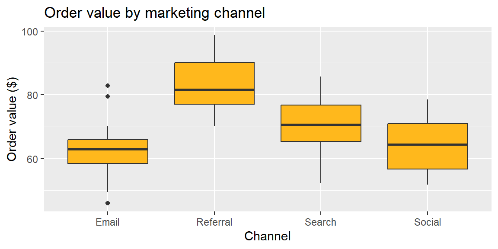

Every comparison so far has involved exactly two groups. But business questions often involve more than two: does average order value differ across four marketing channels, not just two? Do five store layouts perform differently? One tempting approach is to just run a two-sample t-test on every possible pair of groups. With 4 channels, that’s \(\binom{4}{2}=6\) separate tests. Here’s the problem: each test carries a 5% chance of a Type I error (a false positive) on its own, and running six of them lets those chances compound. If all four channels actually perform identically, the probability that at least one of the six tests falsely flags a “significant” difference, just from chance, is \[
1 - (0.95)^6 \approx 0.265
\] More than a 1-in-4 chance of a false alarm somewhere, even though nothing is actually different. Analysis of variance (ANOVA) was designed to answer the single overarching question, “are there any differences among these group means at all?”, in one test, while keeping the overall Type I error rate at the level you actually chose.
18.2 One-Way ANOVA: Testing All Means at Once
A one-way ANOVA compares the means of three or more independent groups, all defined by a single categorical factor (here, marketing channel). The hypotheses are \[
\begin{align*}
&H_0: \mu_1 = \mu_2 = \cdots = \mu_g \\
&H_a: \text{at least one mean differs}
\end{align*}
\] The test statistic is an F-ratio: the ratio of variability between the group means to variability within the groups (ordinary sampling noise around each group’s own mean). ANOVA works by splitting the total variability in the data into these two pieces: \[
\text{SS}_{\text{Total}} = \text{SS}_{\text{Between}} + \text{SS}_{\text{Error}}
\] Dividing each sum of squares by its degrees of freedom gives mean squares, and their ratio is the F-statistic: \[
F = \frac{\text{MS}_{\text{Between}}}{\text{MS}_{\text{Error}}} = \frac{\text{SS}_{\text{Between}}/(g-1)}{\text{SS}_{\text{Error}}/(N-g)}
\] where \(g\) is the number of groups and \(N\) is the total number of observations across all groups. A large F (well above 1) means the groups’ means are spread out much more than ordinary within-group noise would explain, evidence against \(H_0\). This test requires independent observations, an approximately normal (or large-sample) response within each group, and roughly equal variances across groups.
ExampleExample 7.1: Average order value across four marketing channels
A retailer samples 25 orders from each of four channels, Email, Social, Search, and Referral, and wants to know whether average order value differs across channels.
library(tidyverse)set.seed(2025)channels <-c("Email", "Social", "Search", "Referral")means <-c(60, 64, 72, 85)n <-25sd_val <-8#simulate the dataorders <-tibble(channel =rep(channels, each = n),order_value =unlist(lapply(means, function(m) rnorm(n, mean = m, sd = sd_val))))ggplot(orders, aes(x = channel, y = order_value)) +geom_boxplot(fill ="#FFB81c") +labs(title ="Order value by marketing channel", x ="Channel", y ="Order value ($)")

\[
H_0: \mu_{\text{Email}} = \mu_{\text{Social}} = \mu_{\text{Search}} = \mu_{\text{Referral}} \qquad H_a: \text{at least one channel's mean differs}
\]
model <-aov(order_value ~ channel, data = orders)summary(model)
Df Sum Sq Mean Sq F value Pr(>F)
channel 3 7127 2375.6 35.94 1.16e-15 ***
Residuals 96 6345 66.1
---
Signif. codes: 0 '***' 0.001 '**' 0.01 '*' 0.05 '.' 0.1 ' ' 1
The F-statistic is large (about 36) with \(df = (3, 96)\), and the p-value is far below 0.0001. We reject\(H_0\): there is strong evidence that average order value is not the same across all four channels.
18.3 Post-Hoc Comparisons: Tukey’s HSD
Rejecting \(H_0\) in an ANOVA tells us that some channel differs from some other channel, but not which pair. Running six separate two-sample t-tests to find out would bring back exactly the inflated Type I error problem ANOVA was meant to avoid. Tukey’s Honestly Significant Difference (HSD) solves this by constructing confidence intervals for every pairwise difference at once, adjusted so that the overall (family-wise) chance of a false positive across all the pairwise comparisons stays at the chosen \(\alpha\) level. A pair of group means is declared significantly different if the corresponding Tukey confidence interval does not contain 0.
ExampleExample 7.2: Which channels actually differ?
Reading the output: the confidence interval for Social − Email contains 0 (its adjusted p-value is about 0.94), so we do not have evidence that Email and Social differ. Every other pair’s interval excludes 0 (adjusted p-values all below 0.05), so Search, Referral, and each of Email/Social are all significantly different from one another, with Referral producing the highest average order value and Email and Social the lowest (and statistically indistinguishable from each other).
This is exactly why the post-hoc step matters: the overall ANOVA correctly flagged that something differs, but only Tukey’s HSD tells us the real story is “Referral > Search > {Email, Social}”, not that all four channels are different from all others.
18.4 Computing ANOVA and Tukey’s HSD in Excel
In Excel, load the Data Analysis ToolPak (File > Options > Add-ins, if not already enabled) and choose Anova: Single Factor from the Data Analysis menu. Provide the data with each group’s values in its own column (or use grouped ranges), and Excel produces the same Sum-of-Squares/df/Mean-Square/F/p-value table shown above.
NoteExcel doesn’t have a built-in Tukey’s HSD
Unlike the ANOVA table itself, Excel has no built-in function for Tukey’s HSD. If you need post-hoc comparisons and are working primarily in Excel, the most practical options are to compute Tukey’s HSD by hand from the ANOVA table’s \(\text{MS}_{\text{Error}}\) using a studentized range table, or to run the post-hoc step in R (TukeyHSD()) even if the rest of the analysis was done in Excel.
18.5 Recap
Keyword
Definition
One-way ANOVA
A test of whether three or more independent groups share a common mean; \(H_0: \mu_1=\cdots=\mu_g\).
Between-group variability
Variability among the group means themselves.
Within-group (error) variability
Ordinary variability of observations around their own group’s mean.
F-statistic
\(\text{MS}_{\text{Between}}/\text{MS}_{\text{Error}}\); large values are evidence against \(H_0\).
Tukey’s HSD
A post-hoc procedure that builds simultaneous confidence intervals for every pairwise difference, controlling the overall (family-wise) Type I error rate.
18.6 Check Your Understanding
NoteProblems
A company wants to compare average customer satisfaction across five store locations. If it instead ran a separate two-sample t-test for every pair of locations, how many tests would that require? If all five locations truly have identical satisfaction levels, what is the approximate probability that at least one of those tests would falsely show a significant difference, at \(\alpha=0.05\) for each test?
In your own words, explain what a large F-statistic tells you about the relationship between between-group and within-group variability.
An ANOVA comparing four production lines’ average output produces a significant F-test. A Tukey HSD comparison of Line A and Line B gives a 95% confidence interval of \((-2.1, \, 3.4)\) for the difference in means. Are lines A and B significantly different? Why might the overall ANOVA still be significant even if this particular pair isn’t?
What are the three main conditions required for a one-way ANOVA to be valid?
TipSolutions
There would be \(\binom{5}{2}=10\) pairwise tests. The approximate probability of at least one false positive is \(1-(0.95)^{10} \approx 0.401\), about a 40% chance, even though nothing is actually different.
A large F-statistic means the group means are spread out much more widely than the ordinary sampling noise within each group would predict. If the groups all truly had the same mean, we’d expect between-group variability and within-group variability to be roughly comparable (F near 1); a large F suggests the differences between groups are too big to attribute to chance alone.
Since the interval \((-2.1, 3.4)\) contains 0, Line A and Line B are not significantly different from each other. The overall ANOVA can still be significant because it only requires at least one pair to differ; some other pair of lines (not A and B) is likely driving the significant result.
Independent observations, an approximately normal (or large-sample) response within each group, and roughly equal variances across all groups.